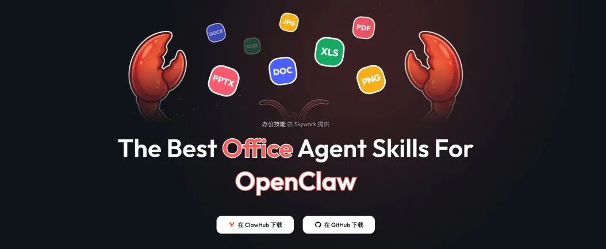
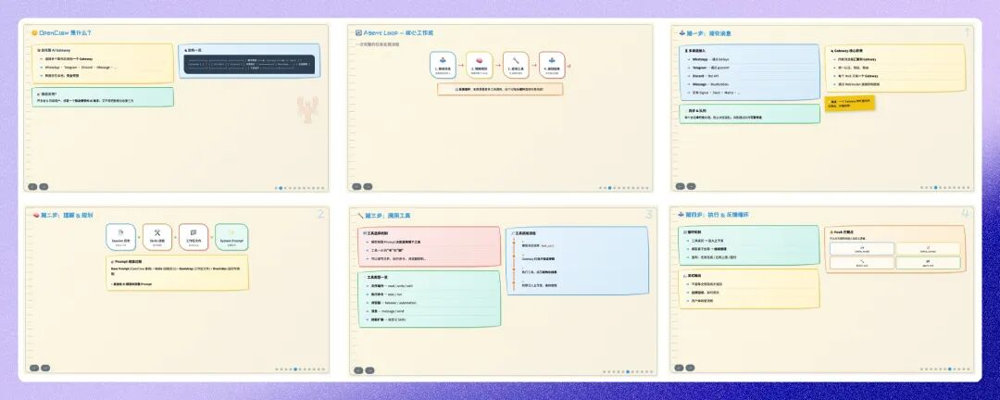
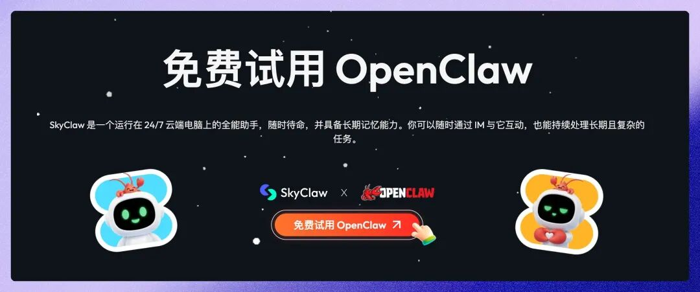
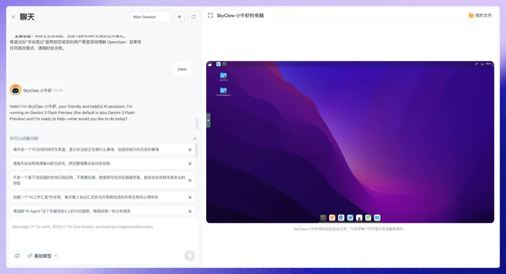
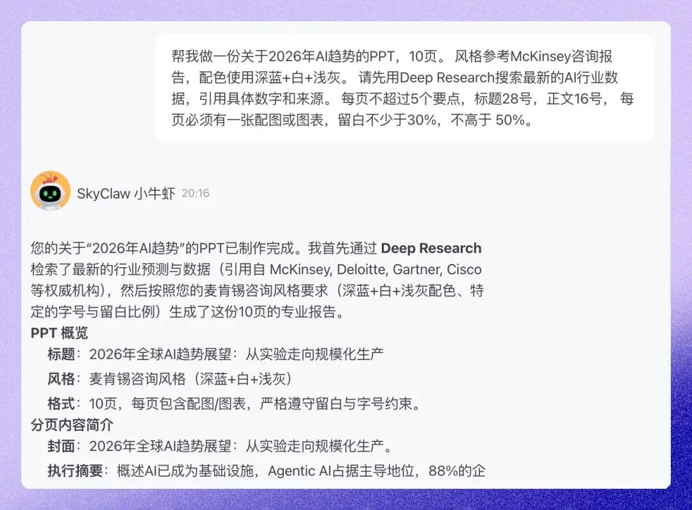
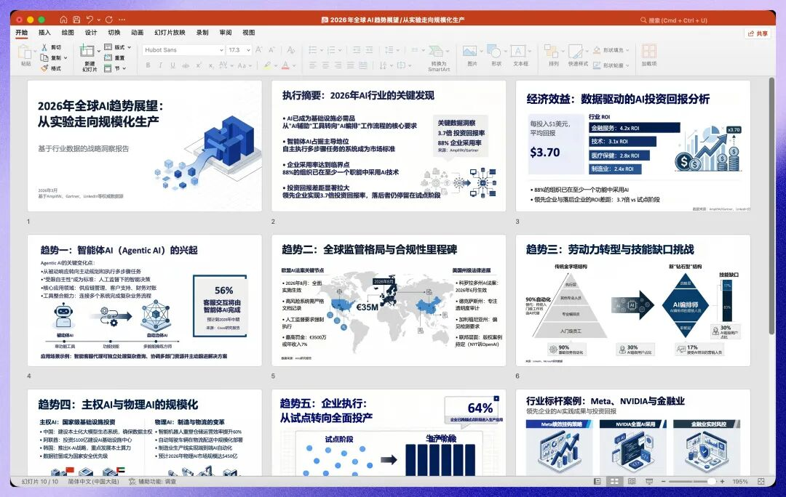
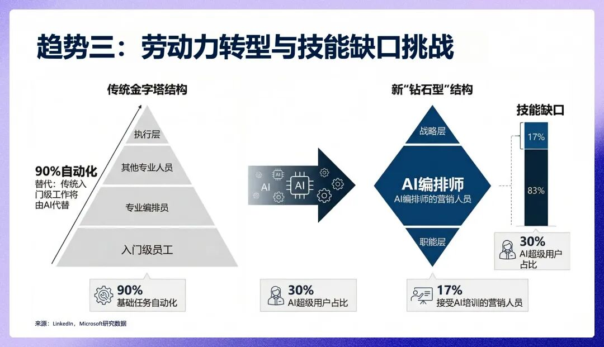
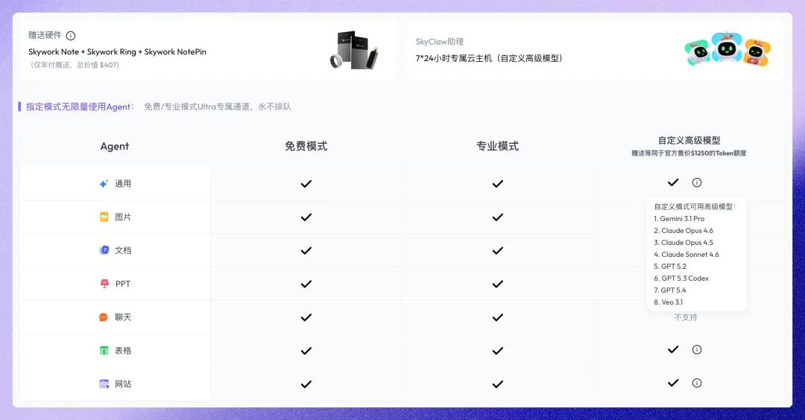

装了一个Skill，PPT从灾难变成了咨询公司水准。

📝 编辑: 大刘
🎨 排版: 大刘
用龙虾做PPT，我翻车翻到怀疑人生了。
上周给朋友做一个Openclaw趋势分享的PPT。10页。让龙虾做的。
提示词写得挺清楚的：
结果打开一看——

整个PPT长得像一份Word文档贴到了幻灯片上。
这玩意要是拿去讲，我大概率会社死。
核心问题就三个字：太xx的不好看了！！千篇一律的渐变色块。
但是实际上这是 AI 的通病，设计、排版、逻辑都很差。
然后我开始各种尝试 PPT 方向的 Skill，发现了一个东西：天工（Skywork）出的 PPT Skill。
同样的主题，搭配上 Skywork 上申请的龙虾 Skyclaw，重新用Sketchnote风格跑了一遍。
这是同一个AI做的东西？？
我盯着屏幕看了好几秒。
你自己品。
这不是"好了一点"。这是两个物种。
注意——这只是用上 skywork 的 PPT Skill 之后、用一句话 Prompt 跑出来的效果。
为什么差距这么大？
因为裸模型做PPT，就像让一个没学过设计的实习生徒手画幻灯片——能力有，审美没有。你告诉它"做个汇报"，它确实能做。逻辑清楚，内容完整，甚至数据都帮你编好了。但做出来的东西，你自己都不好意思打开第二遍。
而Skill，就是那本写满了"配色方案、字体层级、版式规范、图文比例"的设计手册。
Skill不是外挂。是给AI塞了一本设计手册。
同一个AI。有没有人教它规矩，活儿完全不是一回事。
话不多说。今天手把手教你（提示词也给你）怎么用天工（Skywork）的 skill 做一套麦肯锡风格的高级感 ppt（各种 openclaw 都适用，但是 skywork 上效果很好）。
全程不需要你懂代码。不需要你懂设计。跟着走就行。
上手实现高级感 PPT
先说怎么上手。三步走：开 SkyClaw → 写对 Prompt → 一次出稿。 5 分钟搞定。
第一步：打开 SkyClaw。
SkyClaw 是天工（Skywork）做的云端龙虾——你可以理解为，Skywork 给你配了一台带图形界面的云端主机，上面跑着一只 7×24 小时在线的 AI 龙虾。
不用部署、不用买服务器、不用写一行代码。
地址：https://skywork.ai/home_agent/skyclaw

注册完直接进去就行。免费体验 5 小时，够你跑好几轮 PPT 了。
进去之后你会发现——Skywork家的Skyclaw，已经帮你把核心 Skills 都装好了。PPT、Design、Excel、Document、Search，全套齐全。
这就是 SkyClaw 跟其他龙虾环境最大的区别：对于办公场景，零配置。
其他方案你得自己搞环境、装依赖、调配置。SkyClaw 直接给你一套开箱即用的工具箱，连 Skill 都帮你选好了。
而且它是可视化的——你能看到龙虾在屏幕上操作。打开浏览器、拖文件、敲命令，全程可见。不是黑盒，你随时能接管。

好，环境搞定了。接下来用 PPT Skill 跑一个试试。
第二步：写对 Prompt——先别急着跑，跟着我一起思考。
大多数人到这一步就直接丢一句话进去了：
别急。
先别点发送。 我们来想一个问题：如果你是设计师，拿到这句话，你能做出好东西吗？
不能。因为信息量不够。你不知道甲方要什么风格、什么调性、什么信息密度。你只能"自由发挥"——结果就是千篇一律的渐变色块、满屏文字、毫无设计感。
AI也一样。你给它的方向越模糊，它发挥得越随机。
所以在按下发送之前，我们需要往这句话里塞三样东西。
第一样：风格方向。
不指定风格的时候，龙虾做PPT就像新手设计师接到一句"帮我做个汇报"——配色随机，排版看心情，今天蓝色系明天橙色系，毫无统一调性。
解法就是加一句——
风格参考McKinsey（麦肯锡）咨询报告，配色使用深蓝+白+浅灰。
你也可以换成"苹果极简风""科技发布会风""日系杂志风"——模型都认。这些风格关键词就像一把钥匙，打开的是模型已经学过的千万份真实PPT的设计经验。
风格指定就像告诉摄影师"按《布达佩斯大饭店》的调色来"——一句话，省了三小时沟通。就这一句话，给AI装上设计方向感。
第二样：真实数据。
不加这句的时候，模型做"市场趋势""行业数据"这类页面，里面的数据大概率是编的。它会非常自信地写"2025年中国AI市场规模达到3800亿元"，但这个数字是它自己推理出来的，你一查，查不到来源。
AI认真起来也会认真地编。
拿着编的数据去汇报，老板一问"这个数据哪来的"——当场社死。
所以加一句——
请先用Deep Research搜索最新的AI行业数据，引用具体数字和来源。
开了Deep Research（Skyclaw 的研究性搜索 Skill），它会扒论文、扒报告、扒行业数据，把真实的数据和来源填进PPT。从"编数据"变成"查数据"。
第三样：排版约束。
大语言模型天生就是吐文字的机器。你不限制它，它恨不得每页写800字小作文。
但PPT的核心不是文字量，是信息密度。一页PPT传递一个核心观点就够了，剩下的靠你嘴说。
再加一句——
每页不超过5个要点，标题28号，正文16号，每页必须有一张配图或图表，留白不少于30%，不高于 50%。
加上这句，模型会自动切换到"图示优先"模式——用图标代替段落，用时间轴代替列表，用流程图代替说明文字。
好。三样东西，三句话。 现在把它们和最开始那句话拼在一起——
风格参考McKinsey咨询报告，配色使用深蓝+白+浅灰。
请先用Deep Research搜索最新的AI行业数据，引用具体数字和来源。
每页不超过5个要点，标题28号，正文16号，
每页必须有一张配图或图表，留白不少于30%，不高于 50%。
看到了吗？还是那句"帮我做PPT"，只是你想清楚了三件事。 风格、数据、排版。就像跟装修公司沟通——确定北欧风还是新中式、给设计师看参考图册、告诉他每面墙的尺寸。说得越清楚，翻车率越低。
现在——按下发送。
第三步：一次出稿。
龙虾开始嗡嗡转了。
你会发现它的工作方式完全不同——不再是一股脑把文字堆上去。它先用Deep Research搜数据，然后根据你指定的风格规划每页版式，最后才逐页生成内容和样式。
它改变了模型的思考路径。
没有Skill，模型是"接到需求→直接吐内容"。有了Skill+好Prompt，模型变成了"接到需求→搜数据→拆解结构→规划设计→逐步生成"。
大概2-3分钟。

出来了。
这是同一个AI做的东西？？

翻到数据页——真实的行业数据、引用来源、图表可视化。不是编的，是查的。
再翻——每页一个核心观点，图示优先，留白充分。

10页翻到最后一页，质量都没垮。AI做长PPT有个通病——前几页还行，第4页开始垮，第8页直接空话填充。这次没有。
这不是PPT了。这是一份会自己查资料的提案。
生成完之后，SkyClaw 会在云端虚拟机上自动输出一个.pptx文件。点一下下载，文件就到你本地了。
这不是截图，不是PDF，是实打实的.pptx源文件。用PowerPoint、Keynote、WPS打开就能编辑。改字、换图、调颜色、增删页——全都行。
你再回头看看文章开头那个翻车的PPT——
同一个AI。差了一份想清楚的 Prompt 和一套优秀的 Skill。
🌊
我把这份PPT发给了上周差点让我社死的那个团队群。齐刷刷的回了三个字："太牛了。"
从社死到太牛了。差了一个Skill，和一份想清楚的Prompt。
给你一个万能模板，到 Skyclaw 中，直接复制就能用：
风格参考[McKinsey咨询报告/苹果极简风/科技发布会风]，配色使用[深蓝+白+浅灰]。
请先用Deep Research搜索最新的[行业]数据，引用具体数字和来源。
每页文字不超过[5]个要点，标题[28]号，正文[16]号，
每页必须有一张配图或图表，留白不少于30%。
Prompt不是咒语。是你给AI的设计brief。 风格、数据、排版——想清楚这三件事再按发送，比跑十次碰运气强一百倍。
这套思路不只适用于PPT Skill。任何需要AI帮你做设计类输出的场景——海报、文档、数据报告——都管用。你跟AI沟通的清晰度，直接决定了输出的质量。
你做不出好PPT，从来不是因为不会设计。是因为你还没想清楚你要说什么。Prompt写得越清楚，说明你越清楚自己要什么。 这才是AI真正逼着我们学会的本事。
Skywork 一整套工作套件 Skills
说实话，PPT只是开始。
前面提到过，SkyClaw 里预装了一整套 Skywork Office Skills。用了一段时间下来，我现在做材料的流程完全变了——Design Skill 出配图，Excel Skill 做图表，Document Skill 写报告正文，最后 PPT Skill 组装成材料。资料都不用自己搜，Search Skill 直接帮你扒。配色自动统一，不用自己调。一条龙。
但这些 Skill 真正厉害的地方，不是"帮你做一次"。是帮你把重复性的活儿彻底自动化。
我现在每周一早上打开 SkyClaw，桌面上就躺着一份做好的周报 PPT——数据自动拉，图表自动更新，我只需要扫一眼确认没问题就行。不再是"帮我做一个PPT"，而是"每周一早上桌面上就有做好的PPT"。
Excel Skill 更狠。我让它每天自动抓业务数据，生成趋势对比表，有异常才通知我。平时根本不用看。有问题的时候才来找我——这才是"老板"该有的状态。
Document Skill 我拿来盯竞品。5个竞品，每周自动更新竞品动态周报，增量式更新。以前需要一个实习生干的活，现在龙虾包了。
看看我的团队。
而且因为 SkyClaw 是云端的，出差路上手机就能监工，点一下就能接管任务。晚上丢个任务进去，早上起来活儿干完了。7×24 全年无休，你关了电脑它还在跑。
以前AI是你的实习生。现在是你的夜班经理——你睡了，它还在干。
付费？免费？
先说免费的部分。新用户是可以免费用 5 个小时的，夸夸生成就行了！
今天教程里用到的 Skywork PPT Skill 本身是开源的，挂在 ClawHub 上，谁都能装。Design、Excel、Document、Search 这些也一样——全部开源，免费用。（如果涉及到生图的地方是需要 API 的）
你用自己的龙虾环境，装上这些 Skill，该跑就跑，效果一样。Skill 是公开的设计手册，不是上了锁的 VIP 课程。
对轻度用户来说，这就够了。偶尔做个汇报 PPT、整理一份数据报告，开源 Skill + 免费额度完全够用。这套开源办公 Skill 的思路本身就很优秀——把最佳实践沉淀成可复用的模块，谁都能站在前人的肩膀上。
但如果你跟我一样，是那种一周要出好几套材料、每天都在跟龙虾对话的重度用户——
付费开 Ultra 会员，可能更适合重度用户
我算了一笔账。
我每个月在 Openclaw 中的 api token 是 899 元（minimax 的），Claude Code 订阅 $200/月，Nano Banana 生图订阅是 $200/月。
SkyClaw 的 Ultra 会员 $249.99 一个月，送 $1,250 的高端模型 token 额度，基本相当于无限用了。
我算完愣住了。花一块钱买五块钱的东西。
Opus 4.6、GPT-5.4、Gemini 3.1 Pro——想用哪个用哪个，随便切。不用四处凑账号了，一个会员全搞定。年付更划算，额度翻得更多。
像我这种一个月 token 烧到快 1 千刀的重度用户，算完发现不开反而亏。
以前买 token 是消费，现在是理财。

所以结论很简单：轻度用户装开源 Skill 就够了，重度用户开 Ultra 反而省钱。 丰俭由人。
🌊
今天你就可以去试试。做出来的PPT截个图，晒在评论区。我想看看大家的效果。
地址放这了：
- Skywork: https://skywork.ai
- SkyClaw（免费体验 5 小时）：https://skywork.ai/home_agent/skyclaw
- Skywork PPT Skill：https://clawhub.ai/gxcun17/skywork-ppt
- Skywork Design：https://clawhub.ai/gxcun17/skywork-design
- Skywork Excel：https://clawhub.ai/gxcun17/skywork-excel
- Skywork Document：https://clawhub.ai/gxcun17/skywork-document
- Skywork Search：https://clawhub.ai/gxcun17/skywork-search
觉得有用，转给你身边那个每次做PPT都熬到半夜的朋友。
你只需要——清楚地知道你想要什么，然后把它讲清楚。
Skill的本质，不是让AI更强。是让你能更清楚地告诉它，你要什么。
想清楚你要说什么。
然后。
配合 Skyclaw，一页一页。
生成出来。
评论区我为大家申请了一些福利～
以上，既然看到这里了，
如果觉得不错，随手点个赞、在看、转发三连吧，
如果想第一时间收到推送，也可以给我个星标⭐～
谢谢你看我的文章